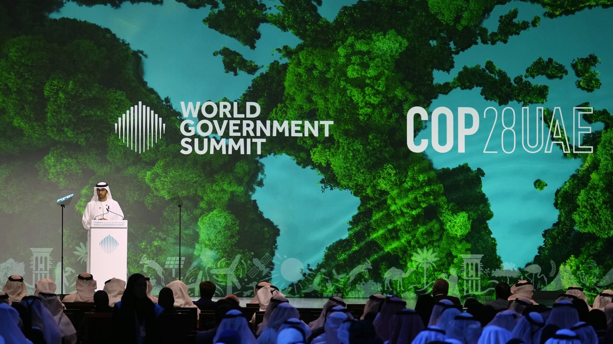
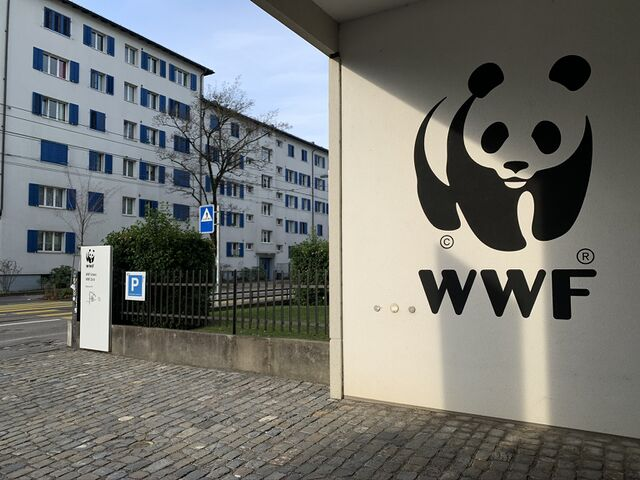

BIENVENU chez Ecoworld-Ensemble, protégeons notre planète!
Notre Terre est un trésor fragile qui mérite d'être préservé pour les générations futures.Chez EcoWorld, nous croyons que chaque action compte, aussi petite soit-elle. Rejoignez notre mouvement pour un avenir plus vert, plus propre et plus durable.
Nos engagements:
- Sensibiliser aux enjeux environnementaux
- Agir concrètement grâce à des projets locaux et internationaux
- Éduquer pour adopter des modes de vie respectueux de la nature
Ensemble, nous pouvons faire la différence !
Que vous soyez un particulier, une entreprise ou une association, découvrez comment contribuer à notre mission. Parce que protéger l'environnement, c'est protéger notre avenir.
🌍 Ecoworld à la COP28 : Une voix engagée pour la planète
 À l’occasion de la 28e Conférence des Parties (COP28) qui s’est tenue à Dubaï, aux Émirats arabes unis, l’organisation Ecoworld a pris part au World Government Summit, un événement de haut niveau réunissant des dirigeants, des experts et des acteurs du changement venus du monde entier. Notre participation visait à renforcer notre engagement environnemental sur la scène internationale et à porter la voix des peuples les plus vulnérables face à la crise climatique. À travers des panels, des ateliers de travail et des rencontres bilatérales, Ecoworld a plaidé pour : Une justice climatique équitable et inclusive, L’accélération de la transition énergétique, Le soutien accru aux solutions locales d’adaptation, Et la préservation de la biodiversité, notamment en Afrique. Le sommet a également été l’occasion pour notre équipe de présenter nos projets phares, comme "EcoVillage", une initiative durable combinant énergies renouvelables, reforestation et éducation environnementale. “Nous avons le devoir d’agir maintenant, car les générations futures jugeront notre inaction.” — Déclaration de Ecoworld lors du World Government Summit 2025
🏜️ Mission écologique d’Ecoworld dans le désert marocain : préserver l’équilibre fragile des zones arides
 Dans le cadre de son programme “Écosystèmes extrêmes”, Ecoworld a récemment mené une mission de terrain dans le désert du sud marocain, une région particulièrement vulnérable face aux effets du changement climatique.
Cette mission avait pour objectif :
D’étudier l’impact de la désertification sur la biodiversité locale,
De rencontrer les communautés nomades affectées par la rareté des ressources,
Et de mettre en place des actions pilotes de restauration des sols et de gestion durable de l’eau.
Les experts d’Ecoworld, en collaboration avec des chercheurs marocains et des ONG locales, ont lancé un projet expérimental de reforestation par techniques de micro-irrigation, utilisant des espèces résistantes à la sécheresse. En parallèle, des ateliers d’éducation environnementale ont été organisés dans plusieurs villages, sensibilisant les populations aux pratiques agroécologiques durables.
“Protéger le désert, c’est aussi protéger les peuples qui y vivent et les savoirs ancestraux qu’ils portent.”
— Équipe de mission Ecoworld – Maroc 2025
Cette immersion au cœur du désert marocain renforce la volonté d’Ecoworld d’agir sur tous les fronts, même les plus extrêmes, pour préserver les écosystèmes menacés et soutenir les populations qui y sont attachées.
Dans le cadre de son programme “Écosystèmes extrêmes”, Ecoworld a récemment mené une mission de terrain dans le désert du sud marocain, une région particulièrement vulnérable face aux effets du changement climatique.
Cette mission avait pour objectif :
D’étudier l’impact de la désertification sur la biodiversité locale,
De rencontrer les communautés nomades affectées par la rareté des ressources,
Et de mettre en place des actions pilotes de restauration des sols et de gestion durable de l’eau.
Les experts d’Ecoworld, en collaboration avec des chercheurs marocains et des ONG locales, ont lancé un projet expérimental de reforestation par techniques de micro-irrigation, utilisant des espèces résistantes à la sécheresse. En parallèle, des ateliers d’éducation environnementale ont été organisés dans plusieurs villages, sensibilisant les populations aux pratiques agroécologiques durables.
“Protéger le désert, c’est aussi protéger les peuples qui y vivent et les savoirs ancestraux qu’ils portent.”
— Équipe de mission Ecoworld – Maroc 2025
Cette immersion au cœur du désert marocain renforce la volonté d’Ecoworld d’agir sur tous les fronts, même les plus extrêmes, pour préserver les écosystèmes menacés et soutenir les populations qui y sont attachées.
🐼 🇨🇭 Ecoworld en mission au siège du WWF en Suisse : une coopération internationale pour la planète
 Dans le cadre de son engagement pour une action environnementale renforcée à l’échelle mondiale, Ecoworld a effectué une visite officielle au siège international du WWF (World Wide Fund for Nature) à Gland, en Suisse, en mai 2025. Cette visite stratégique avait pour objectif de nouer des liens de coopération, d’échanger sur les approches globales de conservation, et d’explorer de futures collaborations sur le terrain.🌍 Un échange d’expériences au sommet
Durant cette mission, l’équipe d’Ecoworld a été accueillie par plusieurs responsables des programmes internationaux du WWF. Cette rencontre a permis : De présenter les projets phares de terrain menés par Ecoworld en Afrique, notamment dans les domaines de la reforestation, de l'éducation environnementale et de la résilience climatique ; D’étudier les méthodologies du WWF en matière de conservation de la faune, d’écosystèmes critiques et d’engagement communautaire ; De discuter d’initiatives conjointes, notamment autour de la protection des zones transfrontalières et des écosystèmes fragiles.🛠️ Vers des synergies concrètes
Plusieurs axes de coopération ont été identifiés, notamment :- La mise en réseau des actions locales d’Ecoworld avec les campagnes globales du WWF, telles que Earth Hour, One Planet ou Forests Forward ;
- Le soutien technique et méthodologique dans l’évaluation d’impact environnemental ;
- Le renforcement des capacités des jeunes écologistes africains, par des formations croisées et du mentorat.